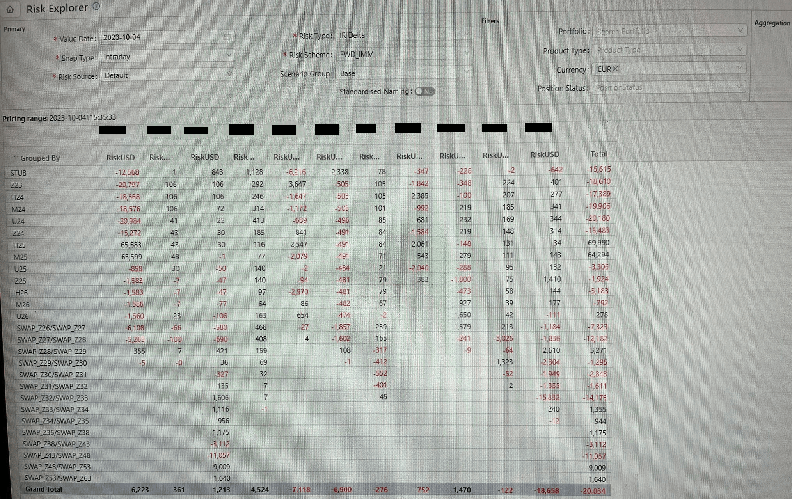

Capula Summer 2023 Software Internship
Summary
Reported under two senior traders at Capula Investment Management, a British hedge fund, to create custom tools for bond traders to quickly analyze risk, utilizing an in-house API, Python, and a GUI.
Background
Over the summer of 2023, I was given the opportunity to work abroad in London, England, developing some software tools for a hedge fund. I was directly working under two senior traders at the fund, who wanted streamlined tools for analyzing risk in their bond trading. Normally they did this all through excel, a process they found time-consuming, and they wanted a more elegant, robust, and streamlined solution.
Before I had arrived, the in-house software development team had created a prototype for an API to pull the firm's financial data for usage. I was given the data, a rough sketch, and a desk. After asking further questions about what was desired, and sketching a few more ideas, I had a blurry idea of what I wanted to create, and set about doing so.
Details
Although I cannot share the code or authentic data due to its confidential nature, I can offer a general overview of my creation. The developed features included enabling users to create intuitive custom configs, view various currencies/risk buckets/times in nested tabs, combine any of the aforementioned in custom-created tabs, select a group of cells to compute the sum value, and more. Using Tkinter, I implemented a three-fold nested GUI and established a simplistic yet sturdy config style with JSON. I was able to contact my old employers to send a picture of the program in action, and have been cleared to show this photo.
The data to below shows the sensitivity each fixed income bond portfolio has to changes in interest rates. In other words, how much does the bond change with a change in one basis point. Due to both company and legal regulation, I am not able to show the actual books the traders were using, but I can show the layout of the program.
The desired features included being able to create intuitive custom configs for each user, to be able to see several currencies/risk buckets/times in nested tabs, to be able to combine any of the above in custom created tabs, to be able to select a group of cells to get the sum value, and others. I was able to create a 3-fold nested GUI using tkinter, and a simplistic yet robust config style with JSON.
Challenges
Reflecting on the project, the largest challenges were creating all the nested tabs for each of the three sublayers, devising an intuitive config format, and optimizing the data display. Tackling the nesting involved intensive work with Tkinter documentation and whiteboard mockups, enabling me to pinpoint where I was misordering the nesting. Subsequently, rectifying the nesting facilitated a better design visualization. The optimization was notably trickier, given that the API call documentation was somewhat perplexing, but after numerous attempts, I achieved real-time data display.
The nesting just required me to sit down and struggle through tkinter documentation and whiteboard mockups until I was able to understand where I was misordering the nesting. The config format fell out of that, as fixing the nesting allowed me to visualize a better design. The optimization was a bit more difficult, as the API call documentation was a bit tricky, but after many, many failures I was able to get the data to display in real time.
Outcomes
My program, Risk Explorer, was thoroughly reviewed and scrutinized, and after approval was pushed out company-wide. My Risk Explorer program is now used by the entire bond trading floor, and shortly after I left for home both traders I reported to contacted me to send me glowing reviews.
Through my work, I was able to streamline an otherwise tedious, time-consuming, and therefore costly process, and allow for the traders to "set it and forget it", re-using their configs and easily adding to them as needed. I also learned how to operate in a professional environment, and how to work with end users to create a tool that satisfies their specific needs.